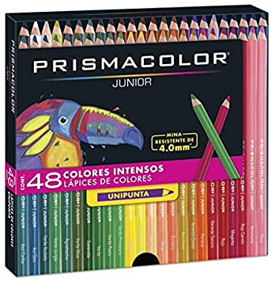

Lápices de Colores Redondos Prismacolor Junior Intensos 4.0 mm / 48 piezas

Descripcion
Colores Prismacolor por 24 unidades y 48 colores luminosos, ideales para dibujar y colorear. Prismacolor Junior es una gran selección de colores para inspirar a jóvenes artistas, con una amplia variedad de colores.